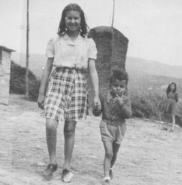
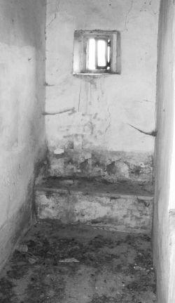
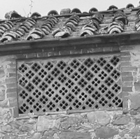

Quercegrossa (Ricordi e memorie)
CAPITOLO IX - Mezzadria
Vai all'Indice dei Capitoli
Vai all'Indice Mezzadria
La casa e il podere
La naturale posizione di forza dei proprietari nel rapporto di mezzadria portò quasi subito alla dimora obbligata dei coloni nella casa colonica per ottenerne il massimo rendimento. Si formarono nel tempo, come un sol blocco, casa e campi in modo da permettere al contadino di raggiungere ogni angolo del podere senza sprechi di tempo e senza invadere terre altrui. Quel fare determinò l'aspettò ambientale delle zone a conduzione prevalentemente mezzadrile dove isolati poderi circondati da prese, prati e boschi di loro pertinenza ne caratterizzarono il territorio come ben possiamo vedere nei dintorni di Quercegrossa. Nel Sei/Settecento quasi tutte le unità poderali ospitano una sola famiglia contadina con superfici molto estese e soltanto dalla fine dell'Ottocento con l'ampliamento dei poderi e la ridistribuzione delle terre si ebbe una coabitazione di due o più famiglie, autonome l’una dall’altra, nello stesso podere.
La casa colonica o podere, cioè il luogo di dimora della famiglia contadina, ha avuto origine dalle vecchie capanne, dalle dimore fortificate medievali, da preesistenti abitazioni di logaioli, trasformandosi o confermandosi poi in tempi di mezzadria in una struttura abitativa e nello stesso tempo di servizio dovendo con i suoi ambienti soddisfare le diverse attività produttive e di allevamento che andavano nascendo intorno al nucleo originale. Naturale quindi che comprendesse, oltre alle stanze di abitazione come cucina e camere, gli ambienti di servizio destinati a stalla per buoi, pecore e maiali, e i magazzini diversi come la cantina o il granaio. Quasi tutti i poderi di Quercegrossa presentano strutture in pietra a due piani, alle quali nel tempo, come è facilmente rilevabile anche a una semplice osservazione, si sono fatte aggiunte, ampliamenti di locali, e di nuove costruzioni a ridosso dell'edificio centrale, per migliorare il podere.
Tutti questi ambienti e servizi brevemente elencati di seguito erano assolutamente indispensabili in quanto facenti parte del processo produttivo e quindi, con alcune varianti tipologiche, sono presenti dappertutto.
Abitazione
Una rampa di scale, quasi sempre esterna, introduceva al piano superiore direttamente nella cucina detta "casa", ma spesso si accedeva alla porta d'ingresso sempre al primo piano attraverso una loggia a due arcate.
Il piano superiore dell'edificio era occupato dall'abitazione del contadino e comprendeva una grande cucina con focolare, acquaio e la mobilia composta dalla madia per la farina e il pane, una piattaia, una credenza e una tavola con sedie. Altre tre o quattro stanze erano adibite a camere da letto per le coppie di sposi e per i ragazzi. Un'altra stanza era adibita a dispensa vi si conservavano i prodotti della lavorazione del maiale, la farina e ogni altra cosa per la cucina. Alcune camere godevano del tepore della sottostante stalla. Per chi lo possedeva il telaio occupava spesso un ambiente a sé stante. In alcuni poderi, come al Castello, un colombaio, spesso resto di antico torrione, dominava dall'alto. Molte abitazioni contadine si presentavano in condizioni di trascuratezza con porte, finestre, impiantiti e tetti sconnessi e dissestati dove vento, acqua e freddo entravano facilmente.
Granaio
Nell'edificio centrale, o in altro adiacente, ma tassativamente al piano superiore sotto il tetto, una stanza era destinata a granaio con altri usi di magazzino. Doveva essere un ambiente fresco, ben aerato, meglio se esposto a nord, privo di umidità per la conservazione del grano che alla tribbiatura vi veniva portato in sacchi dai contadini per la loro parte, per essere successivamente prelevato in piccole quantità e portato al molino per la macinatura, perché la farina si conservava molto peggio del grano. Tante trappole da topi proteggevano il grano da questi voraci animali. “La farina pigliava i farfallini e non durava. Chi non aveva il granaio metteva il grano in una vecchia botte o in un silos”.
Stalla
La stalla era situata al piano terra e era ricovero di bovi, vacche e vitelli. Dalla sua grandezza dipendeva il numero degli animali da tenere. Una lunga mangiatoia e i canali di scolo caratterizzavano quest'ambiente che spesso aveva anche dei divisori in muratura per separare il bestiame. Entrare in una stalla era uno spettacolo indimenticabile con i grossi bovi rivolti alla mangiatoia che ruminavano lentamente, mentre un flusso di aria calda di un odore indescrivibile ti avvolgeva nel silenzio rispettoso del riposo di quelle grandi bestie.
Stanza del segato
In tutti i poderi la stalla era affiancata dalla stanza del segato dove si preparava il fieno per le bestie con un falcione a mano o elettrico.

Il pagliaioQuesto grande deposito di paglia all'aperto, ai bordi dell'aia, era uno dei frutti della tribbiatura. Sorretto dallo stile centrale in legno, si presentava da nuovo con la sua caratteristica forma cilindro-conica. Contro il vento e la pioggia si usava coprirlo con grandi pezze tenute da fili di ferro attaccati allo stile, tesi da grossi sassi legati all'altra estremità. Il fuoco era il temuto pericolo che avrebbe arrecato un danno notevole al contadino. Ricordo verso il 1953 l'incendio al pagliaio del Losi e rivedo il "Gazzei" rotolarsi per terra dalla disperazione. Nel dopoguerra, in cima allo stile sventolarono bandierine di diversi colori, ma soprattutto di color rosso.
Il pagliaio del Losi tagliato dal consumo, si intravede dietro Lara Brogi e Fabio Provvedi
Cantina
Al piano terra, oltre alla stalla per i bovi, si aveva la cantina o tinaia, l'antico celliere, con le sue botti per la conservazione del vino e gli orci in terracotta dell'olio. Alcune presentavano un ambiente sotterraneo, freschissimo.
Magazzino
Presente in quasi tutti i poderi un ambiente adibito a magazzino degli attrezzi, anche un semplice angolo, dove si effettuavano i lavori di riparazione, le donne facevano il bucato e tante altre cose. Un passaggio obbligato dal campo alla "casa".
Il forno
Non c'era podere che non avesse il forno per la cuocitura del pane. Nelle fattorie come l'Arginano, il Castello o in Quercegrossa, poderi Mori, erano in comune a più famiglie (vedi “Il pane è cotto in forno” in “Cose d’altri tempi”).

GabinettoInterno o esterno all'abitazione un solo gabinetto. Oltre soddisfare ai bisogni corporali della famiglia, forniva il bottino utilizzato come concime.
Fino a tutto l'Ottocento le case coloniche, e non soltanto, erano sprovviste di un vero gabinetto, ma avevano una buca esterna, murata alla meglio, sempre vicino alla stalla che scaricava nello stesso bottino; era chiamata latrina. Per le necessità corporali notturne si usava il vaso da notte che la mattina veniva svuotato nella detta buca. Poi dal Novecento i primi gabinetti apparvero anche nei poderi e nelle case dei braccianti. A Passeggeri si possono vedere quelli realizzati dal senatore Sarrocchi all'interno delle abitazioni. Caratteristica di questi impianti sono gli scarichi esterni con tubi di coccio.
Fabio Provvedi: "L'abitazione aveva il gabinetto con la buca fuori di casa". - "Si aveva il gabinetto esterno, ci si andava di notte, col freddo".
Foto sopra: uno dei tanti gabinetti fatti costruire dal Sarrocchi nei suoi poderi di Passeggeri.
Il Pozzo
Separato o incorporato nell'edificio centrale, deposito dell'acqua piovana, raramente di sorgente, garantiva una riserva di acqua. Alla fine di agosto o i primi di settembre veniva pulito per ricevere le nuove acque.
La parata
Ambiente coperto, spesso addossata al corpo centrale, dove si tenevano carri e coltri proteggendoli dalle intemperie. Il modello semplice presentava un tetto, appoggiato a un edificio, sorretto da alcuni pilastri.

La capannaStruttura staccata dall'abitazione per la conservazione dei fieni, paglie e altro. Era areata in modo che non si formasse umidità.
Un esempio di capanna areata a Castagnoli.
L'aia
Una delle zone caratteristiche del podere era l'aia. In antico in terra battuta, le aie vennero pavimentate a pietra e poi a mattoni. In questo grande spazio prossimo alla casa colonica si svolgevano la tribbiatura e battitura di fieni e legumi. Era una spazio per tanti lavori all'aperto, abbinato alla capanna per la comodità di introdurvi fieni e paglie, e per aver la possibilità di ripararvi subito in caso di pioggia i prodotti lavorati.
Il pollaio
Un altro ambiente chiuso, ma con recinto esterno, era riservato al pollaio Luogo indispensabile per l'allevamento di galline, nane, tacchini ecc. che fornivano uova e carne e per soddisfare i patti poderali. Lunghe pertiche erano poste al suo interno, da parete a parete, in posizione asimmetrica per farvi appollaiare i polli per la notte.
La conigliolaia
Non mancava la conigliolaia, dove i coniglioli chiusi in stabbioli di legno o in muratura, crescevano mangiando la fresca erba che giornalmente le contadine facevano nei campi. "A fare l'erba" per i coniglioli, trasportata con grosse ceste a tracolla, era uno degli impegni delle donne di casa. A questi animali non veniva dato da bere. I Carli avevano la stanza dei coniglioli detta "la conigliolaia"; ebbero anche trenta coniglioli.
Il castro
Il "castro dei maiali" era distaccato dall'abitazione per motivi comprensibili. Era diviso in due stalletti per consentire la chiusura e la pulizia. L'allevamento del suino era importante per la famiglia come risorsa alimentare.
Marianna Finetti nel castro a Macialla con il maiale ingrassato che presto verra ammazzato per l’alimentazione della famiglia.
L'ovile
Ospitava le pecore che quasi tutti i poderi di Quercegrossa allevarono fino alle Seconda guerra, in numero limitato di capi. Si trovava spesso affiancato al castro dei maiali.
La concimaia
Distante, ma non troppo, la concimaia era uno spazio all'aperto, con muretti da due lati e una pavimentazione. Giornalmente vi venivano depositati gli scarti della stalla, del castro e dell'ovile, oltre al bottino del gabinetto. Era questo un luogo poco raccomandabile, e si presentava come un ammasso di paglia sporca con liquami puzzolenti che fermentavano fino a fumare. Dall'Ottocento si inizio a impiantire le concimaie anche a smalto per evitare perdite di liquami che filtravano dalla paglia e impregnavano il terreno. Successivamente ne venne regolamentata la costruzione fissandone certi requisiti.
Il fontone
Una grossa buca in terra riempita dall'acqua piovana era una capace riserva di acqua per il vicino orto e per le bestie della stalla. Alcuni erano parzialmente murati negli argini. Un sottile tappeto di erbe verdi acquatiche faceva della sua superficie un prato. Era anche un pericolo, specialmente per i bambini del podere e le cronache riportano tanti casi di affogamento in fonti e fontoni.
L'orto
L'orto, piccolo appezzamento di terra che ogni contadino aveva vicino a casa, di solito presso il fontone, recintato e con cancello per proteggere le colture dagli animali domestici e selvatiche, era fondamentale per integrare la dieta familiare con cavoli, cipolle, pomodori ecc.
La fonte e la sorgente
Per l'acqua buona da bere, quando non era fornita dal pozzo, si ricorreva alle vicine sorgenti che non mancavano intorno ad ogni podere. Ad esse ci si riforniva col carro con viaggi quasi giornalieri. Così per le fonti per lavarvi i panni ci si serviva di quelle comuni a diversi poderi come quelle di Quetole o di Castagnoli.
All'Olmicino: "Con le bestie e la botte al Bozzone o al Ponte a Serpe o a Gaggiola al fontino. Dal pozzo attingevano tutti e due i poderi, mentre d'estate si andava alle sorgenti di Val di Lama o al Dorcio. Le fonti per lavare ai tomboletti del borro d'estate e alla fonte dei noci".
Campi e boschi
Tutto intorno al podere si estendevano i campi lavorati con le loro prese regolari, divise da filari di viti intramezzate da alberi da frutto e ulivi, con i canali di scolo delle acque ben tenuti e i freschi borriciattoli che spesso ne delineavano i confini. Alcuni pezzi, in antico "chiuse", erano coltivate a viti, mentre gli ulivi si trovavano sparsi in qua e là. I campi a pascolo e maggese si alternavano a quelli coltivati. Nei terreni più scoscesi dei nostri poderi si potevano vedere terrazzamenti a sassi intorno agli ulivi, e muretti di sostegno. Strade di campo confluivano al podere. Il bosco ceduo, con le sue querci e lecci, con le sue sorgenti e fiumiciattoli, rappresentava una riserva di legname e quindi una ricchezza che è sempre stata di proprietà del padrone, come appare fin dai primi contratti di mezzadria. Un capitale da custodire con il guardia, e sfruttare concedendolo per gli abbattimenti e per farvi fastella, a privati e farnaciai, oppure gestirlo in proprio. Il bosco, con la sua selvaggina, le sue ghiande, le castagne e i funghi, era un serbatoio alimentare per uomini e bestie.
Mappa della fattoria di Macialla e le terre dei poderi Carusi, Finetti e Rossi. In blu sono delimitati i terreni coltivati dai Losi dell'Arginanino.
|